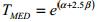
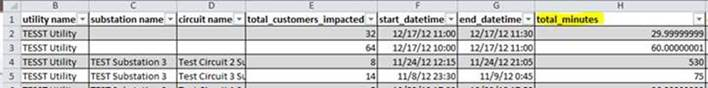
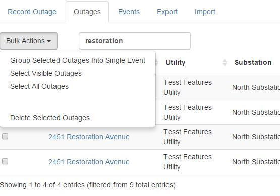
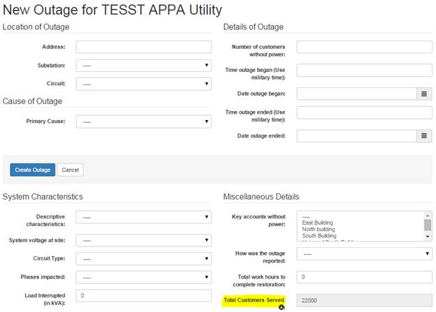

Frequently Asked Questions (FAQ)¶
Answers to common questions are documented here! More in-depth instructions are also included here, such as adding custom variables, importing data, transmission related outages, etc.
Contents:
Adding Custom Variables and Equipment
APPA IEEE Major Event Calculations
- What is the Difference in IEEE and APPA Major Event Calculation?
- How do I classify and report Major Events?
- Do storms (e.g. hurricanes, tornadoes, etc.) count as MEDs? Do Generation and Transmission disturbances count as LOS?
- Previously we were able to see our Timed Threshold SAIDI Value–has something changed?
Calculate Duration of Outages in Exported Spreadsheet
- Is it possible to add another selection in the Primary Cause under Equipment?
- I have an event where structures did not get power back yet. I have left these outages in progress. How should I update these outages?
- I missed 2 of the outages when I was grouping 28 outages for a major event. How can I join the 2 missed outages with the rest?
- Is there a way to accurately enter an outage, which was taken out for varying amounts of time and affected varying amounts of customers?
How to Calculate Indices used in eRT
- What is the basic information you need to import data?
- Can my existing data be easily transferred from the APPA spreadsheet to the web based system?
Mail Merge - Change Total Customers Field
`Run SAIFI short versus SAIFI long`_
`Transmission Related Outages`_
`API and Advanced Import Spreadsheet`_
`Events where No Restoration is Possible`_
`How the System Treats Zero Duration Outages`_
Note
This FAQ is subject to change.
Acquiring EIA Data¶
How do I get the correct EIA Data?¶
The eReliability Tracker can produce data for the revised EIA 861 form. Unfortunately, the feature to remove the “loss of supply” cause is not yet implemented, so eRT users currently need to use the “Schedule 3C-SAIDI and SAIFI calculated by other methods” instead of the “Schedule 3B-SAIDI and SAIFI in accordance with IEEE 1366-2003 standard or IEEE 1366-2012 standard” sheet. The numbers in eRT are calculated using the IEEE 1366 methods, but there’s a mistake in the EIA’s form that puts that “loss of supply” value under that category.
Major Event Days (MED) can’t be excluded without a system outage history. In order to have a suitable statistical definition of a MED a system needs to have enough of an outage history built up. This means the prior years (before the analysis year) must have enough outages entered to set the statistical MED threshold (over the last 5 years there must have been at least 36 outages), so more outage data is needed from prior years to successfully calculate MED’s.
Once the past data has been entered, the IEEE report should be filtered like so:
What are the Steps Sent to List for Acquiring EIA Data?¶
Since many will want to use the eReliability Tracker for generating the appropriate data for the EIA Form 861, here are some simple steps to calculate the required reliability indices in Schedule 3-Parts B and C of the form. This form requests your utility’s SAIDI and SAIFI value for the year, including and excluding Major Event Days (MEDs), in accordance with either IEEE 1366-2003 or IEEE 1366-2012 standards.
To generate the appropriate 861 statistics, select “IEEE 1366 Statistics” under the reports tab, set the start/end dates, and enter 5 in the minimum outage duration field. The resulting indices for SAIDi and SAIFI are in accordance with IEEE 1366-2012 and can be used in your form. To calculate the required indices excluding major event days, select “Use IEEE Day Threshold” from the drop down menu in the filter labeled “Remove Major Events?” in addition to maintaining your previously set filters for date and minimum outage duration (as shown below). These steps should provide the necessary reliability indices for the EIA form.
Adding Custom Variables and Equipment¶
How do I add Custom Variables and Equipment to my Outage Form?¶
- First select to edit your equipment list (or customer variable list) from your utility profile page:
- Then, add the variables you need (i.e. distribution transformer number or lineman name in your scenario):
Lastly, when you or your lineman go into the tracker to enter an outage, you will notice that there is an Additional Details & Custom Variable portion of the form:
Here you will notice that the drop-down list for “Equipment” will populate with the variables you previously added in your equipment list. In your scenario, your lineman can select the drop-down menu, select “Distribution Transformer Number”, and enter the actual number in the notes field. Then the lineman can select the bottom option to “Add New Equipment Detail” to do the same thing for the other variables (i.e. lineman name, work order number, etc.).
Then, you can use those variables in your outage form or in your spreadsheet to record these details per outage like below. This will ensure that your outages have these items recorded for when you export your data or just want to look at one outage in particular.
Annual Report Clarifications¶
Why are all of my SAIDI Values the same? (With and Without MEs)¶
- Full Question:
- In an annual report, the numbers in Table 2 for SAIDI for our utility were the same for with and without ME and the same as unscheduled and scheduled SAIDI number at 0. Can you tell me why? Are we missing some information in the outage data we sent?
You most likely were not missing any information. The reason why your SAIDI value including and excluding Major Event days is the same is because none of your outage events for the year are larger than the Major Event Threshold, which means that your utility did not experience any statistically defined major events. If you look at the SAIDI graph below, you can see that all of the outages are below the 7.757 threshold for 2014.
Since you have no Scheduled outages recorded in the tracker for that year, the value will remain ‘0’ for your scheduled SAIDI. The Unscheduled value will be the same as the previous two SAIDI values since all of the outages entered are unscheduled.
What does MED and LOS stand for?¶
- MED
- Major Event Days
- LOS
- Loss of Supply
EIA Form 861 requests utilities to submit their reliability data, SAIDI in particular, with and without major event days as well as with and without counting outages due to loss of supply from transmission.
APPA IEEE Major Event Calculations¶
What is the Difference in IEEE and APPA Major Event Calculation?¶
The IEEE threshold is calculated by looking at a utility’s history of outages to develop a baseline, which helps determine whether an outage is larger than approximately 99% of the typical outages for a utility. If the outage is larger, it is classified as a major event. That is to say that the threshold is set where there is approximately a 1% chance any given outage is going to be a Major Event based on the utility’s outage history. This does not mean that 1 out of 100 outages will be Major, just that each outage is going to be normal unless it’s unusually large compared to the typical outage magnitude.
However, the IEEE threshold is based on SAIDI-days, where all of the outage events are grouped together by day, and those SAIDI-days that exceed the IEEE 2.5 beta threshold are then removed. You can see this happening when you run the IEEE Statistics or SAIDI reports in the tracker and toggle between removing the IEEE Major Events and not. The graph in the SAIDI report displays outage events, and after using this filter, any outage event that occurred on a day where the SAIDI-day calculation exceeds the IEEE 2.5 beta threshold is removed.
Whereas, the APPA Event Threshold is calculated based on outages and removes those outages, not days, that exceed the IEEE 2.5 beta threshold as calculated based directly on outages. So the key difference is the use of days versus outages as the basis for determining and removing major events. One way isn’t necessarily the right way; rather, providing both methods for users to see the difference each method can make on the indices and decide what they like to use for themselves.
To calculate the IEEE 2.5 beta threshold, one has to take the natural log of each SAIDI value in the data set, calculate the average of the logs (which is your alpha value), calculate the standard deviation for logs (which is your beta value), and then plug all known variables into this equation:
How do I classify and report Major Events?¶
Events in the system are not something that we can manually flag as ‘major’. The IEEE Major Event threshold calculated by looking at a utility’s history of outages to develop a baseline, which helps determine whether an outage is larger than approximately 99% of the typical outages for a utility. If the outage is larger than the threshold, the system will classify as a major event.
Try and enter outages into the system, group them into one event, and run a report to see if the system determines the event as a major event based on the major event threshold calculated. You will see this in action when you run a report like the IEEE 1366 Statistics Report. If you select the filter (also shown below), to remove major events from the analysis, and hit ‘Generate Report’, the system will remove the major events from the analysis. In the table of the report, as shown below, you will see that the system was able to calculate a major event threshold for your utility based on your outage history.
Please also note the difference between the IEEE major event calculation and the APPA major event calculation. The IEEE threshold is based on SAIDI-days, where all of the outage events are grouped together by day, and those SAIDI-days that exceed the IEEE 2.5 beta threshold are then removed. You can see this happening when you run the IEEE Statistics or SAIDI reports in the tracker and toggle between removing the IEEE Major Events and not. The graph in the SAIDI report displays outage events, and after using this filter, any outage event that occurred on a day where the SAIDI-day calculation exceeds the IEEE 2.5 beta threshold is removed.
Whereas, the APPA Event Threshold is calculated based on outages and removes those outages, not days, that exceed the IEEE 2.5 beta threshold as calculated based directly on outages. So the key difference is the use of days versus outages as the basis for determining and removing major events.
Do storms (e.g. hurricanes, tornadoes, etc.) count as MEDs? Do Generation and Transmission disturbances count as LOS?¶
We cannot subjectively decide that a given event is ‘major’. IEEE standards indicate that to determine a major event, a major event threshold, or 2.5 beta threshold, must be calculated by looking at a utility’s history of outages to develop a baseline, which then helps determine whether an outage is larger than approximately 99% of the typical outages for a utility. If the outage is larger than the threshold, the system will classify it as a major event. In many scenarios, major named storms like hurricanes and tornadoes may classify as a major event, but in IEEE standards, it must be statistically determined.
Note that there are other methods used to determine MEDs out there. The EIA Form 861 requests participants to provide their data using the IEEE Method as well as any ‘Other Method’. For example, in the eReliability Tracker, we provide users with the ability to calculate major events in two ways: the IEEE method and the APPA method. The IEEE threshold is based on SAIDI-days, where all of the outage events are grouped together by day, and those SAIDI-days that exceed the IEEE 2.5 beta threshold are then removed. Whereas, the APPA Event Threshold is calculated based on outages and removes those outages, not days, that exceed the IEEE 2.5 beta threshold as calculated based directly on outages. So the key difference is the use of days versus outages as the basis for determining and removing major events.
In the instructions for the EIA 861 form, an example of loss of supply is an outage event that was initiated from the high-voltage transmission system.
Previously we were able to see our Timed Threshold SAIDI Value–has something changed?¶
The IEEE major event threshold is calculated from at least 36 distinct days with outages that occurred within five years prior to the start of the requested report. For exmpale, if you were running an annual report for 2014 (1/1/14 - 12/31/14), the threshold would be calculated from 36 days with events that occurred between 01/01/2009 - 01/01/2014.
The reason for why you see a threshold if you do not enter a start/end date for the report (as shown in the screenshot below) is because the start date is set as the current date, 4/20/15, and there are in fact more than 36 events within the five years prior to 4/20/2015.
Calculate Duration of Outages in Exported Spreadsheet¶
What is the Equation for Calculating Duration?¶
Currently the tracker’s reporting features do not have the ability to display or directly export the outage time per event yet. To calculate it yourself, once you export your outage data, insert a column after your start time and end time columns to calculate the total outage time (like shown in the image below). For that column, insert the formula: =((24*60)*(end-start)), where “end” is the cell location for end_datetime and “start” is the cell location for start_datetime. If you drag that equation down to the end, then it should calculate the outage time per each outage. Then you can sort that column to show you the top ten outages.
Causes List¶
Is it possible to add another selection in the Primary Cause under Equipment?¶
The equipment list was created in accordance with IEEE 1366 standards and is intended to provide a generic, yet detailed, variety of causes to allow all utilities to adequately represent their outage causes. If there is an area where we are inadequately representing a set of outages, we can discuss the possibility of including it in the survey to see if other users agree and see it as a necessary update (Contact Us!) However, it is important for us to maintain a structured set of causes due to the national benchmarking tool we are striving to provide. Please let us know if you have a follow up on this question.
I have an event where structures did not get power back yet. I have left these outages in progress. How should I update these outages?¶
This would be treated as a Scheduled Outage despite if it was caused by fire. Since the restoration was put off indefinitely, it is clear that there was a choice not to restore–which is similar to disconnect. And if you treat this like the case of a disconnect, where the customers are no longer part of the tracked system, typically a utility would put ‘0’ for the number of customers out because those customers are no longer considered as a needing restoration. Therefore those outages will not count in your reliability statistics and will only remain in your records as a note.
Grouping Outages into Events¶
I missed 2 of the outages when I was grouping 28 outages for a major event. How can I join the 2 missed outages with the rest?¶
Go to your “Outages” tab, select the checkbox next to the all of the outages that are grouped in the event. To make this process easier, filter for the outages by address, substation, date, etc. and, if the 28 outages are properly filtered on the screen, use the “Bulk Actions” menu to select all of the visible outages (as shown below).
Once you have selected the previously grouped outages, select the two newly entered outages. Now hit the “Bulk Actions” menu and select to group outages into a single event. When you do this, it should group the two outages tht are not in the event with, all of the rest. This should fix the problem.
Is there a way to accurately enter an outage, which was taken out for varying amounts of time and affected varying amounts of customers?¶
It is recommended to separate outages by circuit and then group the outages into a single event in the tracker. An example storm-related event that occurred on this utility’s ‘Central Substation’ has been created below. The event has been broken out and recorded three separate outage entries (one for each circuit that was affected) and then grouped them into one event. In addtion, the ‘Single-Cuase Event’ was selected to make sure the cause analysis only sees this as 1 storm-related outage, rather than 3.
For a step-by-step look at how to enter this appropriately, take a look at this training video on recording events and partial restorations. you can also visit our eReliability Tracker Youtube channel for additional resources.
How to Calculate Indices used in eRT¶
How do I calculate SAIDI, SAIFI, CAIDI, etc.?¶
We follow IEEE 1366-2012 standards for calculating reliability indices. Follow this link to access APPA’s 2013 Distribution System Reliability and Operations Survey Report and see Appendix B on page 35, which goes into detail on the specific equations/methods for calculating indices. We are happy to answer any other questions not found in this FAQ page. Feel free to email reliability@publicpower.org for any reliability-related questions.
Importing Data¶
What is the basic information you need to import data?¶
The basic information we need in order to do some data analysis is shown below. If you have more information for each outage (i.e. substation/circuit, phases impacted, load interrupted, etc.), we are happy to accept.
- Address of Outage
- Scheduled/Unscheduled
- Primary Cause
- Start Date/Time (e.g. 12/17/2012 11:00)
- End Date/Time (e.g. 12/18/2012 1:30)
- Customers Out
- Total Customers Served
Note
Our causes in the tracker are a pre-determined list of causes, which are in accordance with IEEE 1366-2012 standards.
When importing outages, the field for cause MUST match up with one of the causes in the list; otherwise, the tracker will not accept data.
Importing Data into the Tracker
In case you would like to import your data directly into the tracker, we are more than happy to help walk you through the process. Once the data is in the system, we will be able to access it from back end to do our analysis. Plus, this will enable you to run some of our reports, including IEEE 1366 statistics analysis, top causes analysis, worst performing circuit, etc. Some instructions are included below to help you create a user profile and begin entering outages. In addition, feel free to peruse our eReliability Tracker Youtube videos and webinars to get a good feel of the system.
First, follow this link to register yourself as a leader in the system for your utility. Then, you may begin entering outage information either manually or in bulk. We have two import features in the tracker–simple and advanced– that allow the user to import a CSV spreadsheet with an unlimited amount of data. The advanced option, which allows for greater detail, requires the CSV spreadsheet to be formatted exactly like the example import spreadsheet.
The simple spreadsheet requires the spreadsheet to include the columns below (of which you are only required to fill out the bolded columns):
- Utility Name
- S/U
- Address
- Cause ID
- Start Time
- End Time
- Customers Out
- Total Customers
Can my existing data be easily transferred from the APPA spreadsheet to the web based system?¶
Yes! If you follow this link to our eReliability Tracker Youtube channel, there is a video tutorial on importing data that shows you one of two options for importing data. The video shows the simple import process when transferring from the old spreadsheet to the eReliability Tracker.
Another option is to use our advanced import feature, which allows the user to bulk upload a much larger set of information into the tracker from a CSV spreadsheet of data. This includes restoration notes, circuit type, phases impacted, etc.
Mail Merge - Change Total Customers Field¶
How does the Total Customers Feature work exactly?¶
To clarify, the Total Customers Served field in the outage form should be reflective of the total number of customers served by your utility at the time of the reported outage, NOT the number of customers interrupted during the outage. The issue appears to be with how the total customers value was entered on the outage entry form (please see example below) or when bulk importing data.
When entering an outage, this field is auto-populated with the total number of customers your utility serves, which is based on what is entered in your utility information under the ‘Manage’ tab. If you need to make edits to this number, go to the ‘Manage’ tab to do so.
Note
If you are importing data, the column containing this data is now called total_customers_served (Column Q).
In addition, we have changed the key accounts column (Column R) - previously titled customers_impacted to key_accounts_impacted.
If this appears to be the problem on many outages for your utility, the best way to remedy this would be to export your current data, update the Total Customers Served or Total Customers field, delete everything currently in eRT, and then import the revised data.
Below are steps outlining how to remove what’s currently in eRT and replacing it with a new bulk set of data.
To correct the information:
- Login to the eReliability Tracker
- Go to the Outages tab
- Select the first outage identified above by using the “search” field
- On the outage form, under Miscellaneous Details - Total Customers verify that the Total Customers field is equivalent to the total number of customers served by the utility at the time of that outage (NOT the number of customers impacted by the outage)
- Scroll to the bottom and click Update Outage
- Repeat the process for each reported outage identified above
To delete a set of outages and re-import via spreadsheet:
- Login to the eReliability Tracker
- Go to the Outages tab
- Select all of the outages you wish to delete
- Select the “Bulk Actions Menu” and select to delete all checked outages
- Once the erroneous outages have been removed, use the import feature to re-upload your data into the tracker
General Information on eRT¶
Can I have more information on the eReliability Tracker and its features and capabilities?¶
Yes! We are happy to provide any information necessary about its features and capabilities. Below are some basic descriptions of the features and additional training tools that may help guide you through the application. If you would like to speak over the phone to discuss your utility’s specific needs in an outage tracking and reporting service, we would be happy to set up a call once you Contact Us!
If you would like to see a brief tour of how the system works, please feel free to watch our eReliability Tracker Youtube videos and webinars. If you are more hands-on and would like to do a quick trial to play with the system yourself, let us know and we can set that up for you. We recommend watching the webinars and/or doing a trial run since that would give you a good feel for the system and allow you to see all of the reporting features, including the IEEE Statistics Report, Circuit Ranking Report, and Causes Pie Chart.
The eReliability Tracker provides a number of advanced outage tracking features and should not be impacted by operating system related upgrades. It allows for multiple simultaneous users and additional outage information collection. To prevent utilities from losing any of the information they entered in the old Reliability Tracker spreadsheet, there is also an upload feature to carry data over from pas Reliability Tracker spreadsheets.
eReliability Tracker
Released in November 2012, APPA’s ground-breaking eReliability Tracker web-based software provided public power utilities with a simple way to collect, categorize, and summarize their outage information.
eReliability Tracker 2.0 builds on its predecessor’s success by introducing a number of new features that increase functionality and ease-of-use:
- Enhanced data upload and import
- Utility customer information stored on outage form for editing on an outage-by-outage basis
- Improved response time for report queries
- Dynamic linking of substations and circuits throughout the system
- Monthly reports with historical outage statistics
- Circuit and substation naming
- Simultaneous multiple users (unlimited number of users per utility subscription)
- Mobile phone support
- Multiyear collection and data categorization
- Advanced outage and equipment tracking
- Joint Action Agency-level management
Subscribers to eReliability Tracker 2.0 also receive an annual national reliability report based on the software data and earn points toward the Reliable Public Power Provider (RP3) designation.